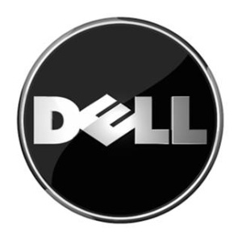

DELL

Dell Inc. (stylized as DELL) was a multinational computer technology company based in Round Rock, Texas and, along with Dell EMC, is a subsidiary of Dell Technologies, one of the largest technology companies in the world with 138,000 employees. Dell manufactures, sells, repairs, and supports personal computers (PCs), servers, data storage devices, network switches, computer software, computer peripherals, high-definition televisions, cameras, printers, and electronics built by other manufacturers. The company is well known for its innovations in supply chain management and e-commerce, particularly its direct-sales model and its "build-to-order" or "configure to order" approach to manufacturing—delivering individual PCs configured to customer specifications.
Dell is considered one of the best laptop brand available at the moment. They are affordable, they come in a variety of models and sub-models and offer good performance. There are many customization und upgrading options on a Dell laptop when compared to devices offered by other brands.